음영[陰影]
고요히 퍼지는 깊은 고소함
BRAZIL 80% · INDIA 20%
커피의 느낌볶은 땅콩, 시리얼, 옥수수, 보리
산미
무게감
로스팅Medium Dark
Beans
원두마다 한자 이름과 장면을 붙였어요. 산미와 무게감, 로스팅 정도를 카드 한 장에 담았습니다.
고요히 퍼지는 깊은 고소함
BRAZIL 80% · INDIA 20%
커피의 느낌볶은 땅콩, 시리얼, 옥수수, 보리
빛이 스며들듯 맑고 산뜻한 산미
ETHIOPIA NATURAL 50% · WASHED 50%
커피의 느낌라즈베리, 산딸기, 감귤, 케인슈거
밤의 고요처럼 깊고 편안한 디카페인
DECAF · BRAZIL 100% 또는 그 외
커피의 느낌검은콩, 고구마, 호박엿, 다크초콜릿
원두 구성은 시즌에 따라 바뀔 수 있어요. 원두 구매 · 문의는 인스타그램 DM으로 남겨 주세요.
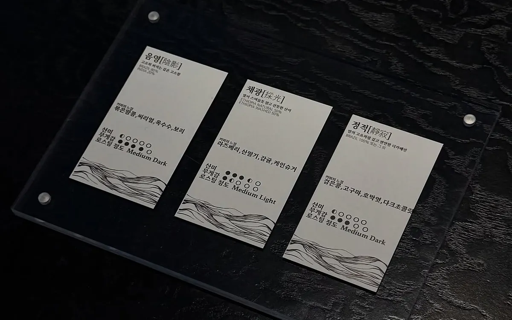
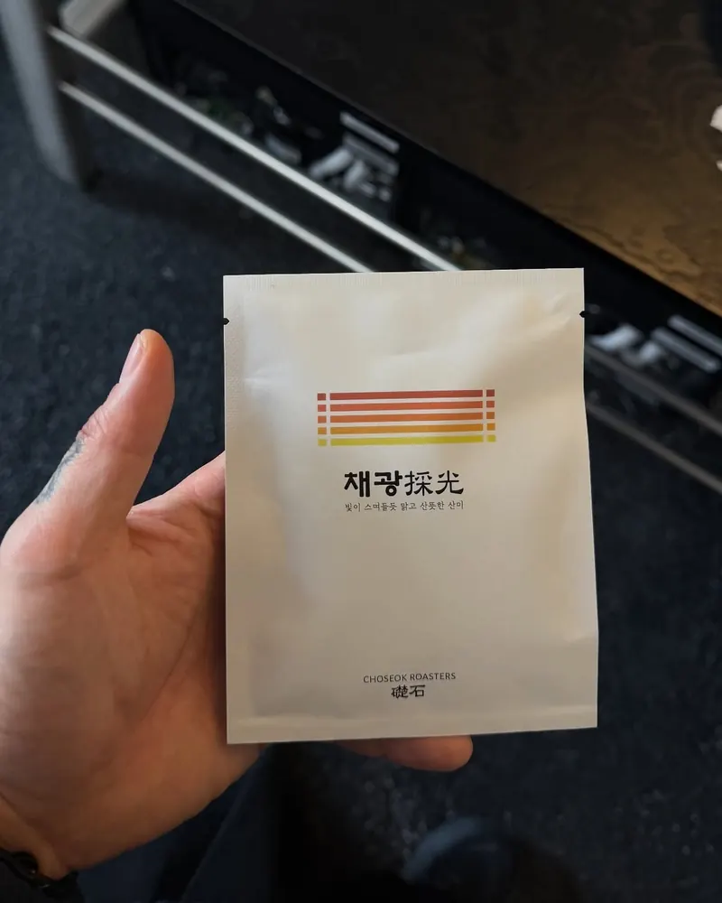
Roasting
생두를 고르는 일부터 한 잔을 내리는 일까지, 커피의 처음과 끝을 직접 다룹니다.
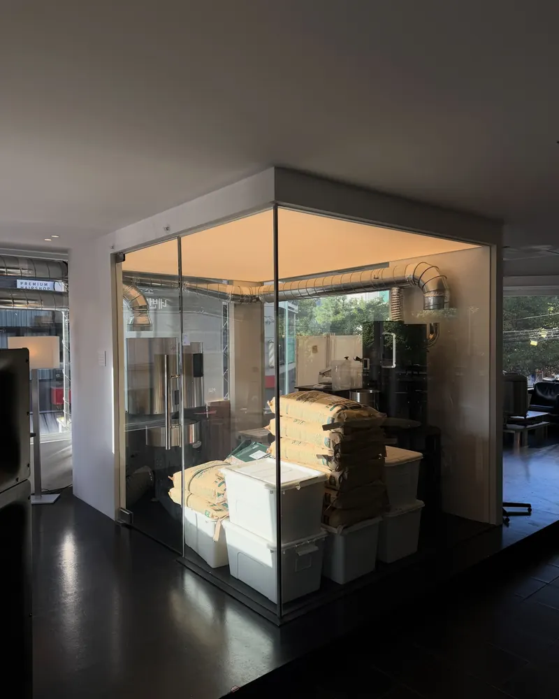
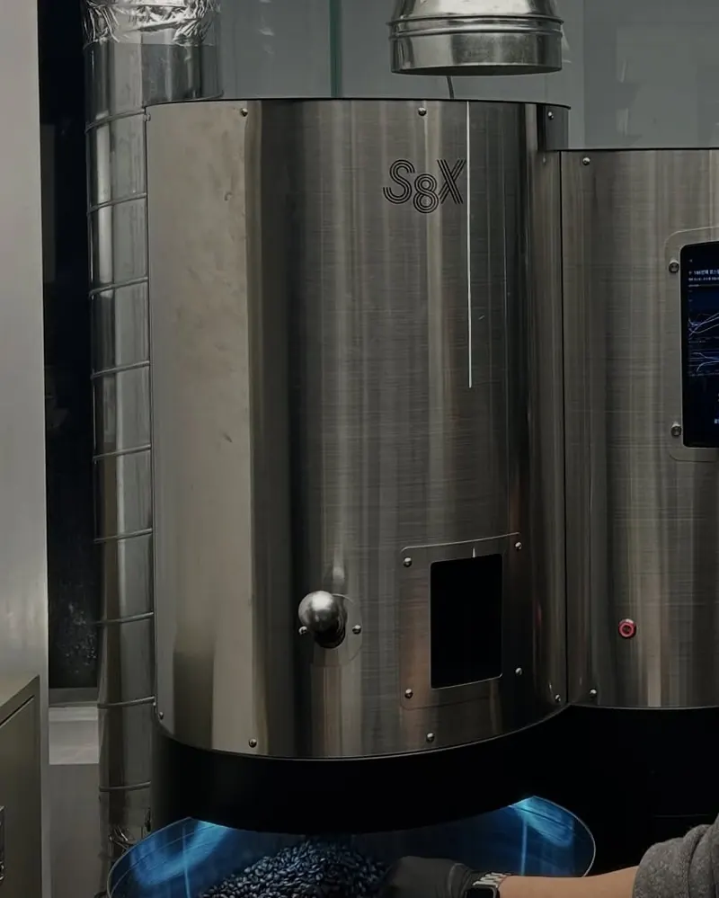
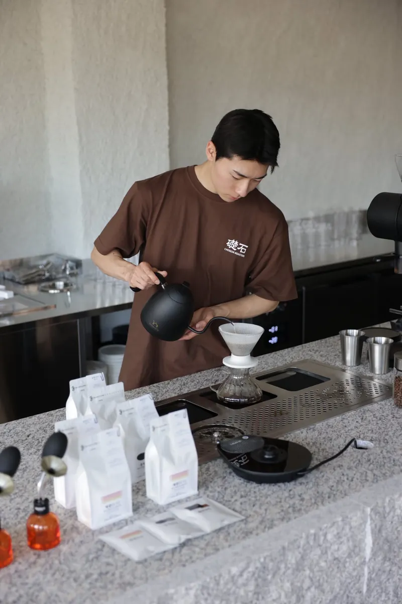
Coffee & More
원두의 결을 살린 커피와 시그니처 음료, 함께 즐기는 디저트.
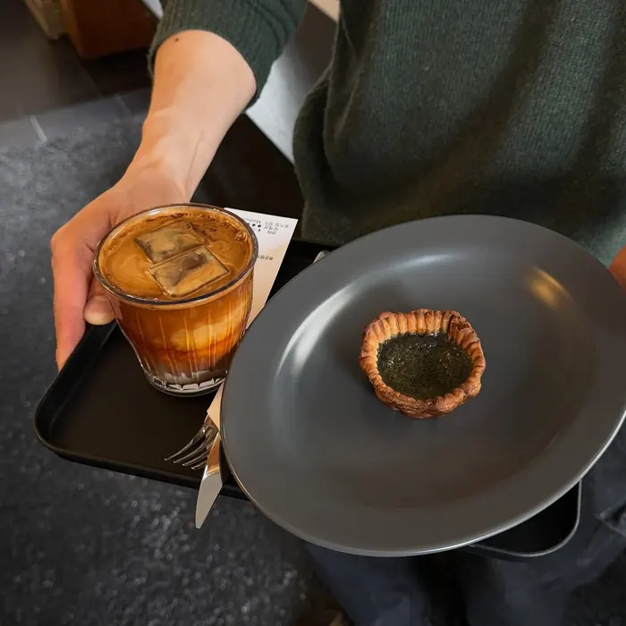
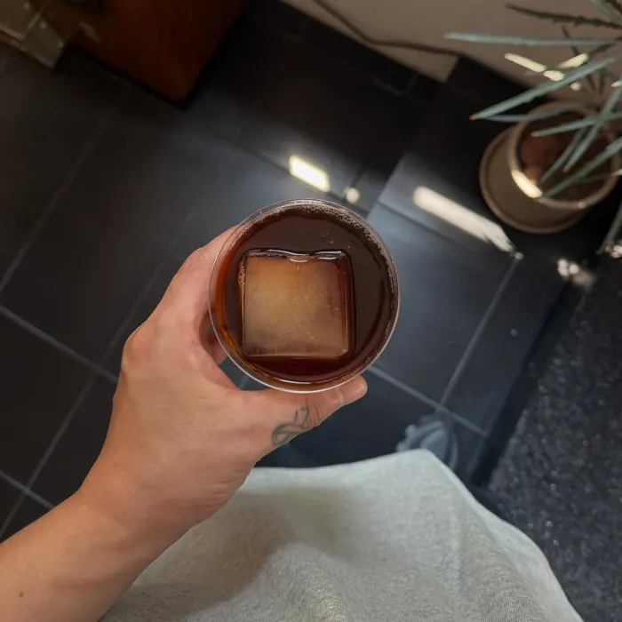
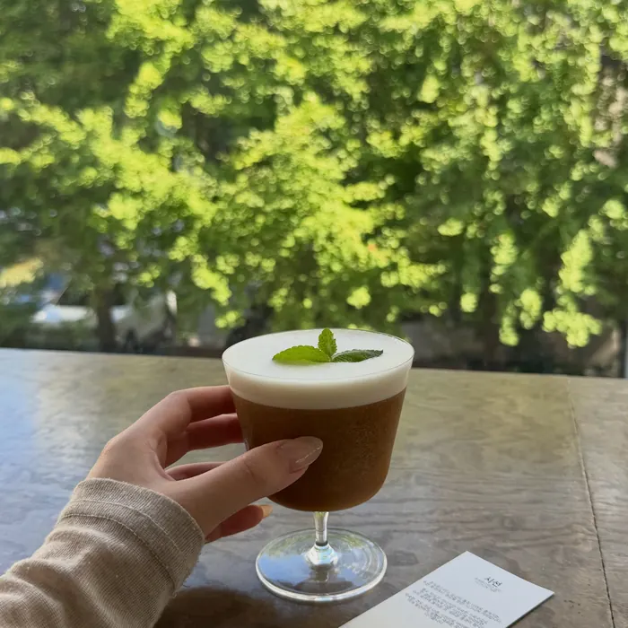
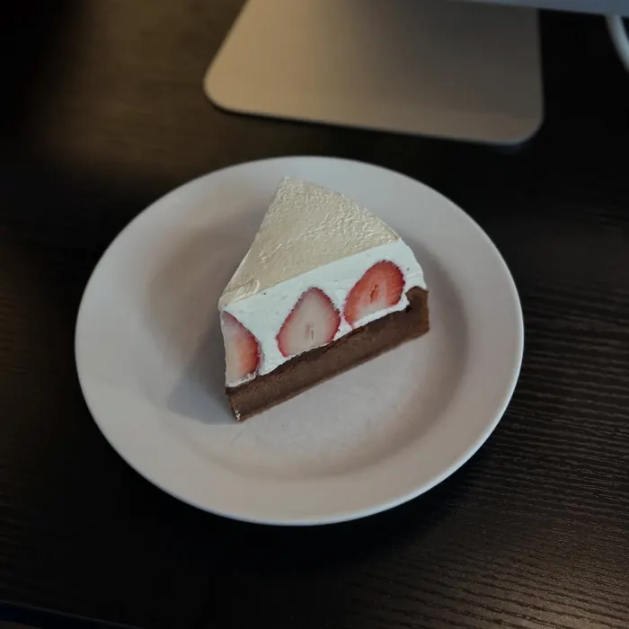
Space
커피에 집중할 수 있도록 덜어낸 공간. 지점마다 다른 풍경을 담았어요.
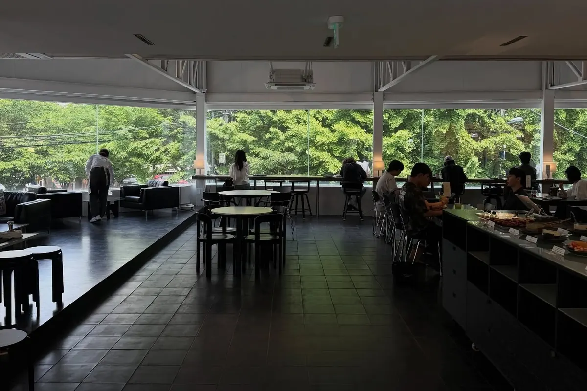
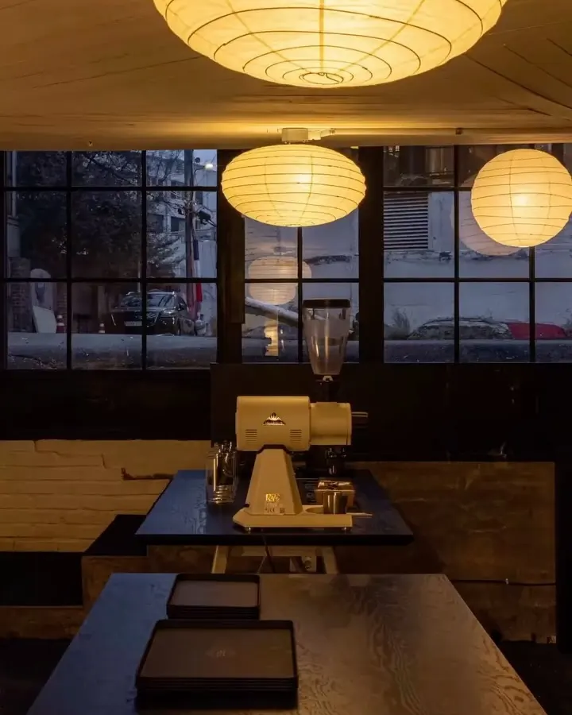
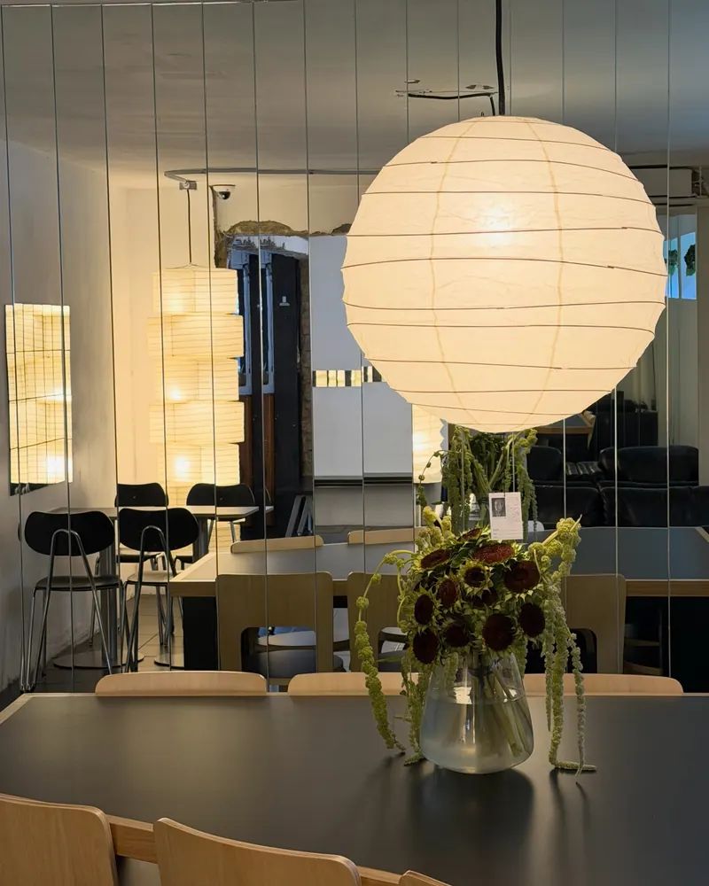
Stores
영업시간 중에는 전화 연결이 어려울 수 있어요. 문의는 인스타그램 DM으로 남겨 주세요.
ULSAN
ULSAN
SEOUL
모든 매장 단체 이용 · 포장 · 무선 인터넷 가능 · 국가정원점은 배달도 가능해요.